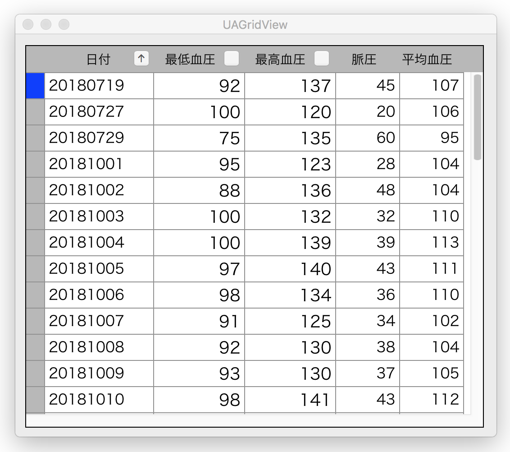

<!-- -->
<DOCTYPE HTML>
<html id="mainhtml">
<head>
  <meta http-equiv="Content-Type" content="text/html; charset=utf-8">
  <title>一覧表を作成する（２）</title>
    <link rel="stylesheet" type="text/css" href="/lib/document.css">
</head>
<body id="mainbody">
<!-- ↓↓↓↓↓↓↓↓↓↓↓ -->
<script type="text/javascript" src="/lib/funcs2.js"></script>
<!-- ↑↑↑↑↑↑↑↑↑↑ -->
<!--div class="lm100 tm0" style="width:550px; border-top:solid 1px #909090;"></div -->
<div id="content">
<h2 class="lm70 tm20 bm10">一覧表を作成する（２） 列をキーにしてソートする</h2>
<div class="lm100 tm10 rm60">
列をキーにレコードを並べ替えることができる。ソートの対象となる列の見出しにボタンを表示し、クリックするたびに昇順/降順のソートを実行する。ある列がソートされている場合、その列のボタンのタイトルに昇降順が矢印で表示される。
</div>
<!-- 画像 -->
<a href="/lib/HTMLofVideo.html?filename=/data/B31/gridObject2.mp4&title=gridObject2&width=600" target="_new">
</a>
<div class="lm120 tm0 rm60">
画像をクリックすると動画になります。
</div>
<h3 class="lm100 tm20 bm0 rm60">
テーブルの一覧表を作成して表示するためのコード
</h3>
<div class="lm100 tm0 rm60">
「一覧表を作成する（１）」のコードに追加するものだけを示す。初期表示で日付の昇順でソートする指定になっている。
</div>
<!-- ソースコード -->
<iframe class="lm100 tm5" src="/lib/HTMLofText.html?filename=/data/B31/AppDelegate1.txt&font=font100" width="550" height="210"></iframe>

<h3 class="lm100 tm20 bm0 rm60">
GitHub
</h3>
<div class="lm100 tm5 rm60">
<a href="https://github.com/mikomokaru-jpn/macOS_S12_UAGridView" target="_new">mikomokaru-jpn/macOS_S12_UAGridView</a>
</div>

<div class="bp40"></div>	<!-- 空白行 -->
<!----------------------------------------------->
</div><!-- end of content -->
<footer id="mainfooter">
<div class="tp10 bm10 bp10 textright"> <span class="rm500 font80"><a href="/html/index2.html">メニューに戻る</a></span><span class="rm20 font80"><a href="#mainheader">TOPに戻る</a></span></div>
</footer>
<script type="text/javascript" src="/lib/access/access2.js"></script>
</body>
</html>


